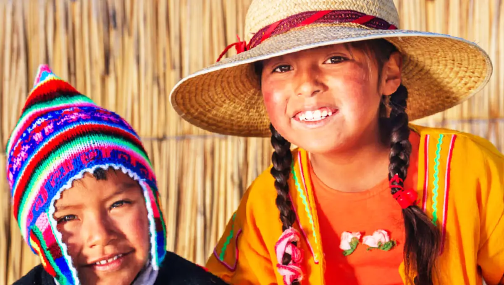

DonFy es una innovadora startup que busca transformar el panorama de las donaciones caritativas en Perú
¿A quién donaremos hoy?CARIDAD PERRUNA
La Asociación fue creada en el año 2014 en Lima con la finalidad de contribuir a la cultura de protección de los animales mediante acciones...
Conocer más

NIÑOS CON ESPERANZA
La ONG “Niños con esperanza” lleva adelante una importante actividad de contención social con varios niños juninenses, a los que...
Conocer másOLLA COMÚN SJL
Mediante esta iniciativa se podrá donar alimentos a una olla seleccionada (ver mapa georreferencial) por un periodo mínimo de dos semanas, hasta que sea....
Conocer másCOMPARTIENDO FRAZADAS
Únete a la campaña contra el friaje “Compartiendo Frazadas”, llevando frazadas, colchones, alimentos no perecibles y ropa de invierno en buen estado a...
Conocer más